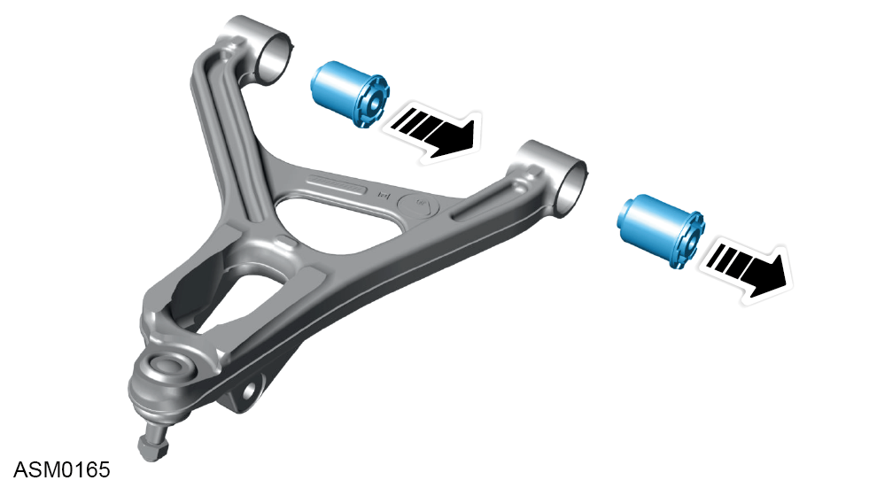
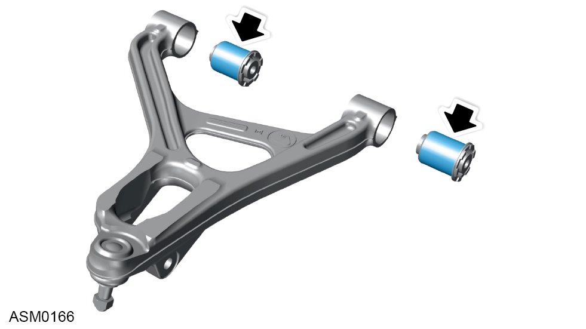
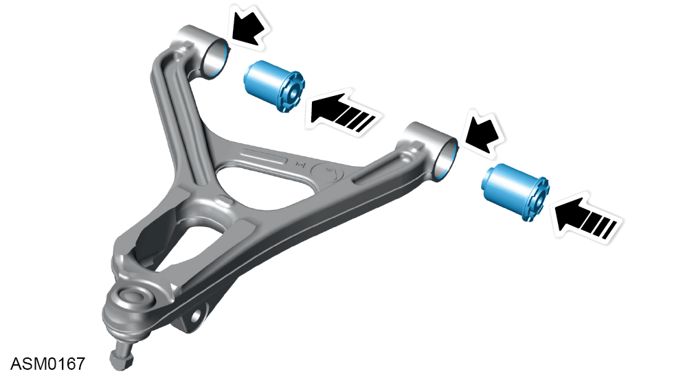

Bush - Wishbone Lower- Front - Left Side
Print
Operation Code: 31.01.26-02
Removal
- Remove wishbone assembly lower - front. Refer to procedure.
- Remove old bushes using a hydraulic press.

- Bushes can only be removed in one direction. Refer to illustration.
Installation
- Installation is the reverse of the removal procedure except for the following:
- Clean wishbone bores before installing new bushes.

- Lubricate the outer surface of the bushes with P80 rubber lubricant to ease installation.

- Make sure bushes are inserted into the side of wishbone bore with the chamfered edge.
- Push bushes into wishbone until flange of bush contacts wishbone.